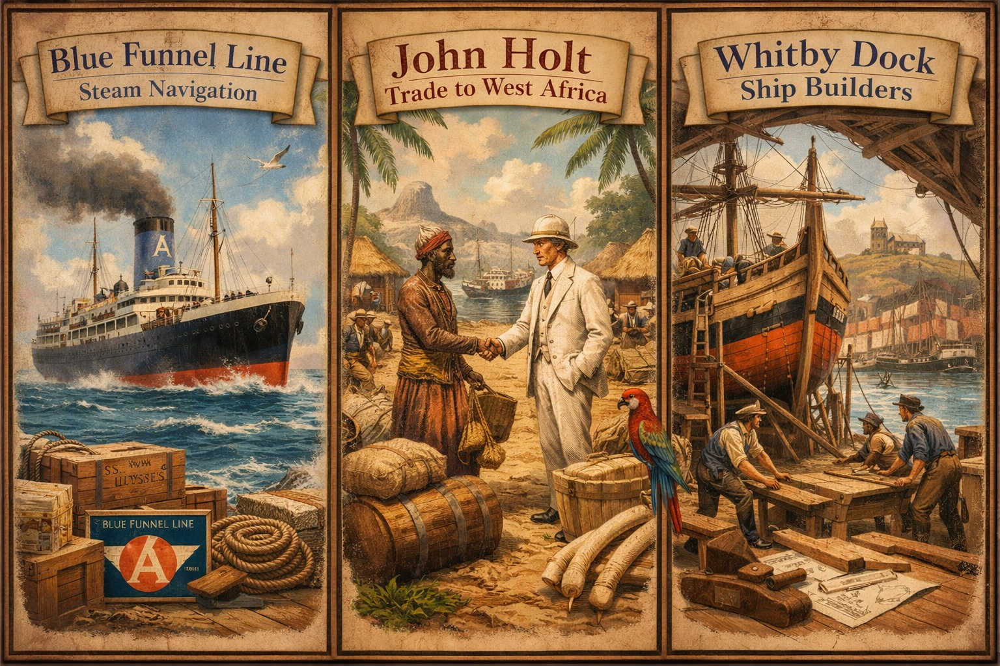

The Holt families played a significant role in Britain’s maritime history, from the shipyards of Whitby to the global shipping empire of the Blue Funnel Line and the Liverpool merchant house of John Holt & Co. This hub page brings together the principal maritime branches, linking to detailed biographies and pedigrees where available.

Alfred Holt & The Blue Funnel Line
Alfred Holt (1829–1911) founded the Ocean Steam Ship Company, better known as the Blue Funnel Line, one of Britain’s most influential shipping enterprises. His innovations in marine engineering and long‑distance steam navigation reshaped global trade routes between Britain and Asia.
John Holt & Co. Liverpool
John Holt (1841–1915) established a major Liverpool merchant house with extensive trade across West Africa. The company became a cornerstone of British export and import commerce, operating warehouses, shipping services, and trading posts throughout the region.
Holts of Whitby
Whitby represents the maritime origins of several Holt families, with connections to shipbuilding, dockside trades, and coastal commerce. The Holts appear in records associated with the Whitby Dock Company and local maritime industries, forming an early foundation for later national and international shipping ventures.